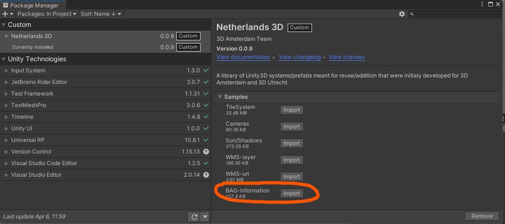
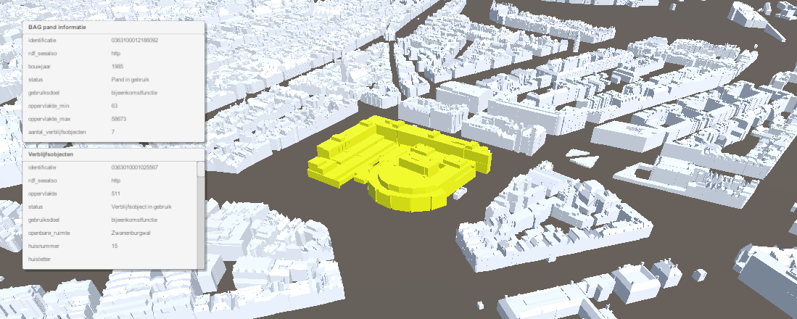
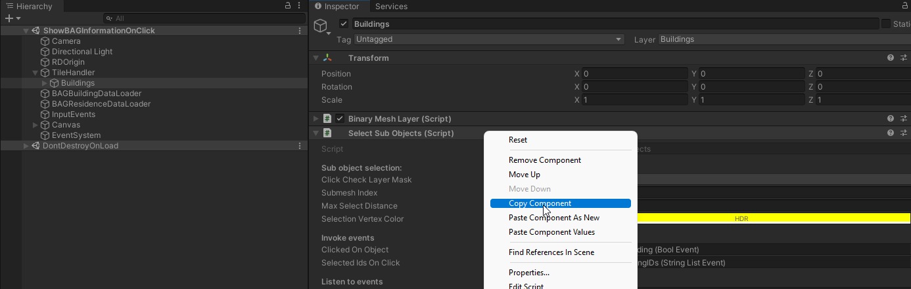
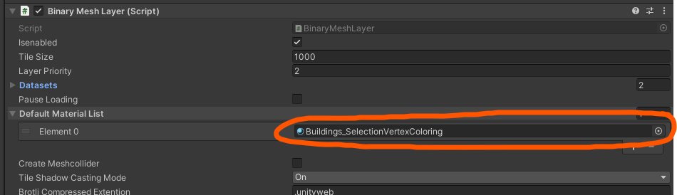

BAG informatie na klikken op gebouw
Warning
Dit deel van de documentatie is nog gebaseerd op een oudere versie van het project. We werken aan een nieuwe versie die deze spoedig zal vervangen.
Het Netherlands3D pakketje bevat een voorbeeld om BAG informatie op te halen van een pand door er op te klikken. Importeer het BAG-information voorbeeld via de Package Manager*.

Je kunt de Package Manager boven in Unity vinden onder 'Window/Package Manager'
Open vervolgens de geimporteerde voorbeeld Scene genaamd ‘ShowBAGInformationOnClick’
Je kan de scene even uitproberen door op de Play knop te drukken. Klik nu op een van de panden die worden ingeladen door te TileHandler, en je zult zien dat het pand wordt uitgelicht met een kleur en de daarbij behorende BAG informatie wordt getoond in een voorbeeld interface.

Toevoegen aan eigen Scene/TileHandlerOm dit te laten werken in je eigen scene moeten we een aantal dingen kopieren. Om te beginnen hebben we het Select Sub Objects script nodig die op het Buildings object staat in de TileHandler van de voorbeeld Scene. Kopieer die dmv. rechtermuisklik, ‘Copy Component’, en vervolgens ‘Paste Component As New’ op je eigen Buildings object in je scene. Op deze manier kopieer je ook de instellingen van het voorbeeld direct mee.
Verander eventueel de Selection Vertex Color om een andere selectiekleur te gebruiken
Kopieer dan de volgende objecten vanuit de voorbeeld Scene naar je eigen Scene:
InputEvents - Dit systeem zorgt er voor dat je muis klik acties worden verstuurd
BAGBuildingDataLoader - Dit systeem download de Pand BAG informatie
BAGResidenceDataLoader - Dit systeem download de adressen van een pand
Canvas - Dit Canvas bevat de voorbeeld interface met de twee panelen
EventSystem - Deze zorgt er voor dat het Canvas aanklikbaar is. Misschien heb je deze al in je eigen Scene. Dan kan je deze overslaan.
We moeten er ook nog voor zorgen dat het materiaal dat in je Scene wordt toegewezen aan de gebouwen ondersteuning heeft om de gebouwkleur te wijzigen. Stel daarom bij je Binary Mesh Layer van je gebouwen object bij Default Material List het Buildings_SelectionVertexColoring materiaal in.

Je kan een materiaal vanuit je Assets op het element slepen, of via het bolletje rechts opzoeken